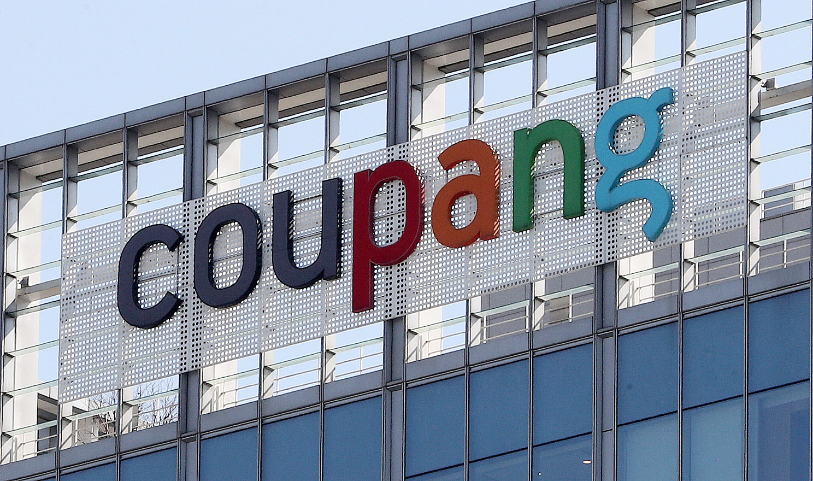

사건 개요
2025년 11월, 쿠팡(Coupang) 회원 약 3,370만 명의 개인정보가 유출된 사실이 확인되었습니다. 초기에는 소규모 프로필 유출로 알려졌으나, 과기정통부와 KISA 조사 결과 해외 서버를 통한 인증 취약점 악용 공격으로 사실상 전 국민에 가까운 회원의 상세 정보와 주문 기록이 유출된 것으로 밝혀졌습니다.
사고 경위 (타임라인)
- 2025-06-24 ~ 11-06: 공격자가 해외 서버를 통해 쿠팡 서버에 장기간 비정상 접근 (해킹 발생 기간)
- 2025-11-07: 해킹 의심 정황 최초 신고 접수
- 2025-11-18: 1차 발표 (약 4,500명 규모 프로필 유출 추정)
- 2025-11-29: KISA 및 관계 당국 조사 결과, 3,370만 건 대량 유출 확인 발표
- 2025-11-30: 쿠팡 대표이사 명의 공식 사과문 게재 및 개별 통지 시작
유출된 정보 상세
주의: 결제 정보(카드번호, 비밀번호)는 유출되지 않았으나, 주문 내역이 포함되어 있어 2차 피해(보이스피싱 등)가 우려됩니다.
- 회원 정보: 이름, 휴대전화 번호, 이메일 주소, 배송지 주소
- 계정 정보: 쿠팡 프로필 ID 및 계정 식별값
- 이용 내역: 최근 5건의 주문 이력 (상품명, 주문일자 등 상세 포함)
이용자 권고 사항
- 쿠팡 앱/웹 접속 후 [개인정보 유출 내역 조회] 페이지에서 본인의 유출 여부 확인
- 주문 내역(구매 물품)을 구체적으로 언급하며 접근하는 택배 사칭 문자/전화 절대 금지
- 비밀번호 변경 및 2단계 인증 설정 (혹시 모를 추가 공격 대비)
- 알 수 없는 해외 로그인 알림 수신 시 즉시 강제 로그아웃 및 신고